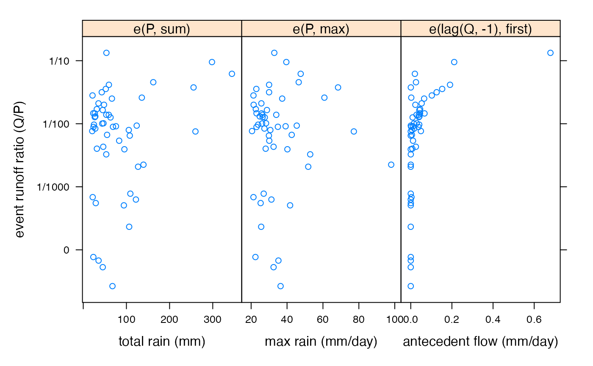

Scatterplots with variables aggregated in event windows.
an object for the generic method; in the formula method this
is a formula as described in the Details section. All terms
in the formula should be aggregated in the given events; for this
purpose a special function e() is defined as a shorthand for
eventapply, with arguments e(X, FUN = sum, ...). The
formula may specify a response (the left hand side of formula), which is
treated as a single term, although it can be a matrix with multiple columns.
Alternatively, the response matrix can be given in response. The
covariate terms are also allowed to be matrix-like with the same number of
columns as the response, in which case each column is plotted against the
corresponsing column of the response.
further arguments passed to xyplot (actually
xyplot.list).
data source giving variables used in the formula. Typically a
data.frame. Passed to model.frame.
event sequence produced by eventseq, or a vector
defining continguous groups on the specified variables.
a response vector or matrix corresponding to the variables in the formula. If this is given, any response in the formula is ignored.
a function to aggregate response, if it is given, in the
given events. If a reponse appears in the formula it should be in a
e() term, and eFUN is not used.
passed to xyplot.
this function returns a trellis object which can be plotted.
data(Canning)
ev <- eventseq(Canning$P,
thresh = 20, inthresh = 1, indur = 3,
continue = FALSE
)
event.xyplot(e(Q, sum) / e(P, sum) ~ e(P, sum) + e(P, max) + e(lag(Q, -1), first),
data = Canning, events = ev,
scales = list(y = list(log = TRUE)),
yscale.components = yscale.components.fractions,
ylab = "event runoff ratio (Q/P)", layout = c(3, 1),
xlab = c(
"total rain (mm)", "max rain (mm/day)",
"antecedent flow (mm/day)"
)
)

## multiple response variables
event.xyplot(cbind(e(Q, quantile, 0.9), e(Q, quantile, 0.99)) ~
e(P, max) + e(P, mean) + e(P, sum),
data = Canning, events = ev,
scales = list(y = list(log = TRUE)),
yscale.components = yscale.components.log10.3
)